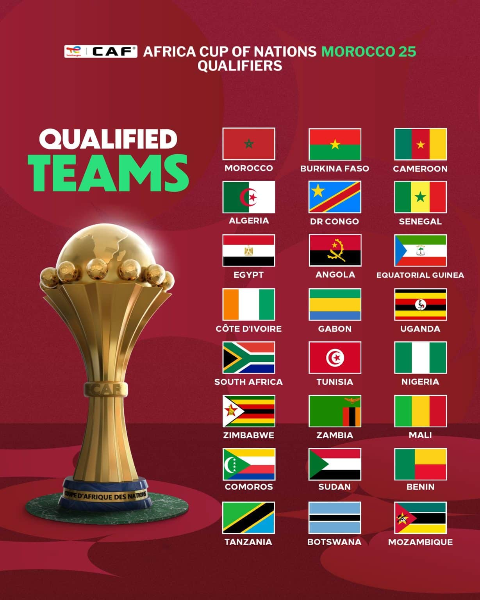
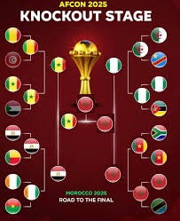

Bild des Turniers

Wir wetten nicht nur um Geld, sondern um Ruhm, Ehre und Schadenfreude!
Turnier abgeschlossen
Der Afrika-Cup ist vorbei. Senegal wirkte im Finale lange so, als hätte die Mannschaft aufgehört, wirklich Fußball zu spielen, fand spät aber doch noch zurück und gewann auf dem Platz. Nach der anschließenden Bewertung wurde Marokko jedoch nachträglich als Sieger gekürt.

Rückblick auf Stimmung, Tempo und die großen Momente des Turniers.
